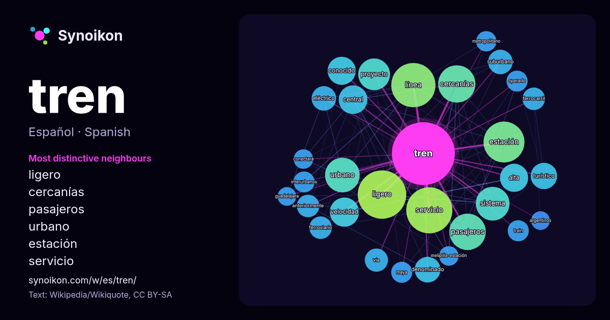

Español · lista de palabras del día
tren
“train” · Las palabras encontradas a su alrededor en 1023 apariciones de Wikipedia, Wikiquote.

Vecinos más característicos
- ligero 69×
- cercanías 40×
- pasajeros 36×
- urbano 31×
- estación 30×
- servicio 29×
- línea 27×
- turístico 21×
- velocidad 20×
- suburbano 20×
- denominado 18×
- eléctrico 18×
- alta 16×
- ferroviario 16×
- proyecto 16×
- train 15×
- interurbanos 15×
- operado 14×
- maya 14×
- central 14×
× = cuántas veces más que en el texto general de Wikipedia.
Vecinos más frecuentes
- ligero 74
- servicio 67
- línea 62
- estación 53
- cercanías 44
- pasajeros 42
- urbano 38
- sistema 36
- proyecto 32
- velocidad 27
- central 26
- alta 25
- conocido 25
- turístico 22
- denominado 21
- ciudad 19
- eléctrico 19
- película 19
- suburbano 19
- metro 17
En contexto
- El tren es un medio de transporte ferroviario compuesto por una serie de vagones o coches acoplados entre sí y remolcados por una locomotora, o bien por Wikipedia snippets · Tren
- El tren ligero, también denominado metro ligero, es un sistema de transporte ferroviario en el que se utiliza material rodante de características similares Wikipedia snippets · Tren ligero
- Se denomina tren de cercanías o tren suburbano al sistema de transporte de pasajeros de corta distancia (menos de 100 km entre estaciones extremas) que Wikipedia snippets · Tren de cercanías
- Un tren de alta velocidad (TAV), también denominado en algunos países tren bala, es aquel tren que alcanza velocidades iguales o superiores a 200 km/h Wikipedia snippets · Tren de alta velocidad
- El Tren a las Nubes (o también llamado Tren de las Nubes) es un servicio ferroviario turístico argentino sobre el ramal C-14 del Ferrocarril General Manuel Wikipedia snippets · Tren a las Nubes
- Mi Transporte Tren Ligero (anteriormente SITREN, Sistema Integral del Tren Ligero, y PreTren) es el servicio de autobuses semi-articulados que prestan Wikipedia snippets · Mi Transporte Tren Ligero
- Un tren de carga (también denominado tren de mercancías o tren mercante) es una composición formada por una o más locomotoras de gran potencia y una serie Wikipedia snippets · Tren de carga
- El tren de aterrizaje es la parte de cualquier aeronave encargada de absorber la energía cinética producida por el contacto entre la aeronave y la pista Wikipedia snippets · Tren de aterrizaje
Más palabras
- agua
- arte
- bosque
- caballo
- camino
- campana
- canción
- ciencia
- ciudad
- clima
- comida
- corazón
- desierto
- dinero
- dios
- espejo
- estrella
- familia
- fuerza
- gato
- historia
- invierno
- isla
- jardín
- lengua
- lluvia
- madre
- mapa
- miel
- montaña
- muerte
- naturaleza
- oro
- otoño
- pan
- perro
- puente
- reloj
- sal
- salud
- silencio
- sombra
- tiempo
- tormenta
- trabajo
- té
- verano
- verdad
- vida
Precalculado el 2026-10-09 con los ajustes predeterminados (±5 palabras, corpus mediano). El mapa interactivo puede actualizarlo con datos en vivo.
Interfaz traducida automáticamente; se agradecen correcciones.